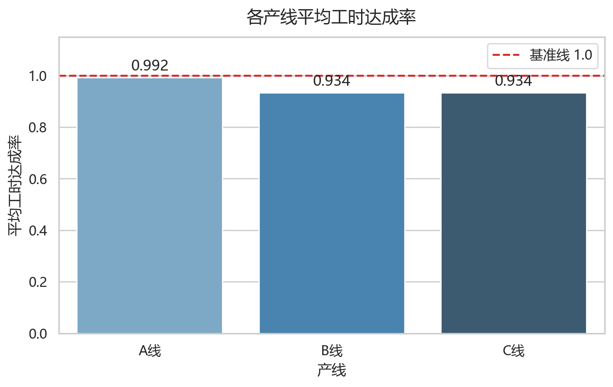
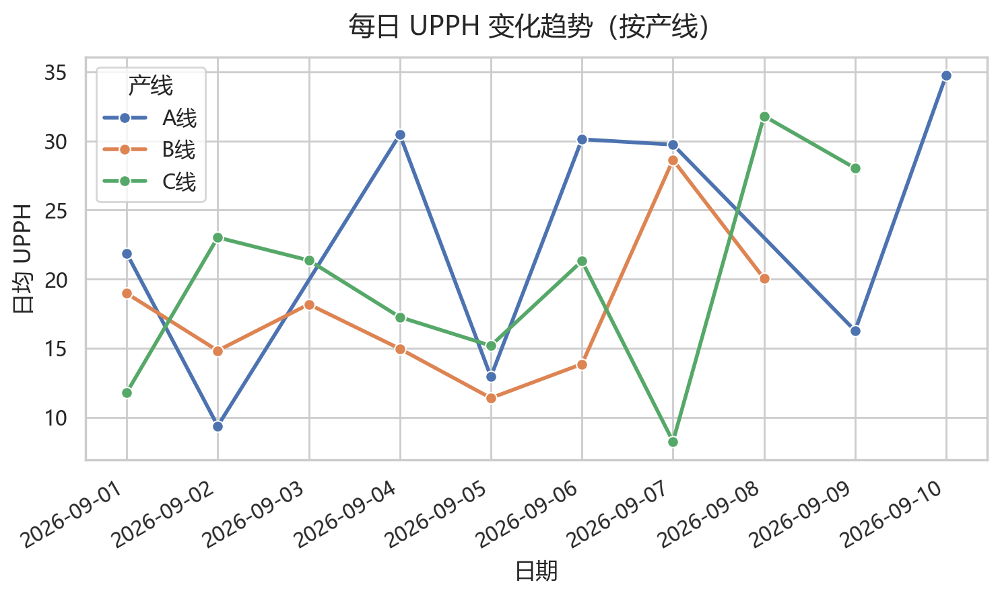
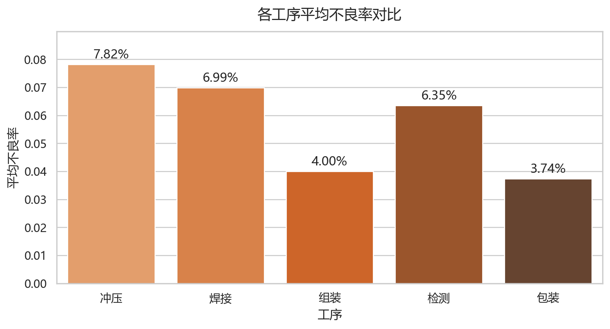

IE Data Copilot - 工业数据分析助手
数据预览（前 10 行）
| 日期 | 产线 | 工序 | 标准工时 | 实际工时 | 产量 | 不良数 | 停机时长 | 工时达成率 | UPPH | 不良率 |
|---|---|---|---|---|---|---|---|---|---|---|
| 2026-09-01 | A线 | 冲压 | 7.60 | 6.86 | 150 | 7 | 0.55 | 1.108 | 21.866 | 0.047 |
| 2026-09-02 | B线 | 焊接 | 7.69 | 6.88 | 102 | 18 | 1.29 | 1.118 | 14.826 | 0.176 |
| 2026-09-03 | C线 | 组装 | 7.05 | 6.32 | 135 | 7 | 0.27 | 1.116 | 21.361 | 0.052 |
| 2026-09-04 | A线 | 检测 | 6.50 | 7.19 | 219 | 13 | 0.40 | 0.904 | 30.459 | 0.059 |
| 2026-09-05 | B线 | 包装 | 6.55 | 7.11 | 81 | 5 | 0.24 | 0.921 | 11.392 | 0.062 |
| 2026-09-06 | C线 | 冲压 | 6.39 | 7.79 | 166 | 0 | 0.00 | 0.820 | 21.309 | 0.000 |
| 2026-09-07 | A线 | 焊接 | 6.23 | 5.65 | 168 | 8 | 0.71 | 1.103 | 29.735 | 0.048 |
| 2026-09-08 | B线 | 组装 | 7.34 | 8.78 | 176 | 2 | 0.00 | 0.836 | 20.046 | 0.011 |
| 2026-09-09 | C线 | 检测 | 7.38 | 8.49 | 238 | 11 | 0.43 | 0.869 | 28.033 | 0.046 |
| 2026-09-10 | A线 | 包装 | 6.11 | 5.83 | 154 | 2 | 0.00 | 1.048 | 26.415 | 0.013 |
可视化分析

各产线平均工时达成率

每日 UPPH 变化趋势（按产线）

各工序不良率对比
向数据提问
（提交后在此展示 DeepSeek 返回的表格、数值或文字说明）